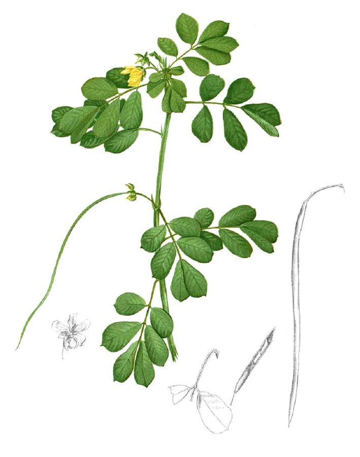

चक्रमर्दSickle Senna
Senna tora · Fabaceae · FLR-0018

- Scientific name
- Senna tora (L.) Roxb.
- Family
- Fabaceae
- Hindi
- चक्रमर्द / कसौंदी
- Status here
- native
- IUCN
- not evaluated
When to look कब देखें
Expected mainly in June, July, August, September, October, November.
चक्रमर्द / Sickle Senna
Senna tora (L.) Roxb. — Fabaceae
चक्रमर्द — चक्रमर्द पूर्वी यूपी का सबसे अनदेखा सड़क-किनारे का पौधा है — इतना आम कि आँखें इसे देखते हुए भी नहीं देखती। इसके बीज दाद-खाज के इलाज में सदियों से काम आए हैं। लंबी, हँसिए जैसी फलियाँ इसकी अचूक पहचान हैं।
हिंदी परिचय Hindi Overview
चक्रमर्द (Senna tora, पहले Cassia tora) Fabaceae परिवार का देशी वार्षिक पौधा है। पूर्वी उत्तर प्रदेश की हर सड़क, नाली, और खेत की मेड़ पर मानसून के बाद दिखता है।
नाम का अर्थ: "चक्रमर्द" संस्कृत से — "चक्र" (दाद/ringworm) + "मर्द" (नाश करने वाला) = "दाद का नाश करने वाला"। इसके बीजों का पेस्ट दाद और त्वचा रोगों पर लगाने की परंपरा सदियों पुरानी है।
कॉफ़ी विकल्प: दुर्भिक्ष और कठिन समय में इसके बीजों को भूनकर पीसकर पेय बनाया जाता था — "coffee weed" का नाम इसीलिए। बीजों में कैफ़ीन नहीं होती, लेकिन भूने बीजों का स्वाद कॉफ़ी से मिलता-जुलता है।
इस पौधे की हँसिए जैसी लंबी फलियाँ (20–25 सेमी तक) इसकी सबसे पक्की पहचान हैं — रोडसाइड पर इससे बड़ी कोई फली नहीं होती।
Quick Identification शीघ्र पहचान
| Feature | Description |
|---|---|
| Height & Habit | Erect annual herb or short-lived subshrub, 50–150 cm tall; stems angular and smooth |
| Leaves | Pinnately compound with 3 pairs of obovate leaflets; nectary gland between the lowest pair |
| Flowers | Yellow, 5-petaled, 2–3 cm across, borne in pairs or small clusters in leaf axils |
| Fruit | Very long (15–25 cm), thin (4–5 mm), sickle-shaped pod curving into a shallow arc |
| Seeds | 25–40 seeds per pod, square-rhomboidal, olive-green and shiny, 4–6 mm long |
| Odor | Pungent, disagreeable, and foetid when leaves or stems are crushed |
Field tip: Look for an upright roadside herb with yellow flowers and extremely long, curved, sickle-like pods. When the leaves are crushed, they emit a distinct, unpleasant odor. Senna occidentalis is similar but has straight pods and more leaflet pairs.
Morphology आकृति विज्ञान
| Feature | Measurement |
|---|---|
| Plant height | 50–150 cm |
| Leaf length | 6–12 cm |
| Leaf width | 2.5–5 cm (leaflet length) |
| Flower diameter | 2–3 cm |
| Fruit / seed dimensions | 15–25 cm (pod length) |
Habit: Erect annual herb or short-lived subshrub; 50–150 cm; stem angular, glabrous (smooth) to finely hairy; branching in upper portions.
Leaves: Paripinnate (even-pinnate) compound; 2–4 pairs of leaflets (most commonly 3 pairs). Leaflets 2.5–5 × 1.5–3 cm; obovate to oblong; base asymmetric; apex rounded; glabrous above, finely hairy below. A prominent nectary gland (extrafloral nectary) present between or below the lowest pair of leaflets — this is a raised, oval, orange-yellow gland about 2–3 mm — attracts ants, which may deter herbivores.
Flowers: Axillary; in pairs or small clusters; bright yellow; 5 free petals (slightly unequal); 7 functional stamens + 3 staminodes. Sepals 5, green, reflexed at anthesis.
Pod: Linear, 15–25 cm long × 4–5 mm wide; gently curved (sickle-like); margins ribbed; tipped with a short beak; indehiscent (does not open to shed seeds — falls whole, or seeds are exposed as pod decomposes). Contains 25–40 seeds arranged in two rows.
Seeds: Rhomboidal (4-sided); 4–6 mm × 3–4 mm; hard, shiny; olive-green to greyish; with a narrow groove on each face.
हिंदी: extrafloral nectary — चींटियाँ यहाँ आती हैं।
फली: नहीं फटती — पूरी गिरती है या सड़कर बीज निकलते हैं।
बीज: 25–40 प्रति फली, चौकोर, शीशे जैसे।
Ecological Impact पारिस्थितिकी
Nitrogen fixation: Like all Fabaceae, Senna tora forms root nodule symbiosis with Bradyrhizobium bacteria — fixing atmospheric nitrogen. This makes it a pioneer that improves degraded, nitrogen-poor roadside soils.
Extrafloral nectaries and ant mutualism: The glands between the leaf pairs secrete nectar that attracts ants — particularly black garden ants. The ants patrol the plant, deterring caterpillars and other herbivores. This is a classic plant-ant mutualism (myrmecophily) found across many Fabaceae.
Pollinators: Bees (especially carpenter bees and bumble bees) visit the yellow flowers. The distinctive "buzz pollination" — where bees vibrate at a specific frequency to release pollen — is used by some bee species on Senna flowers.
Seed dispersal: Pods fall whole; seeds exposed as the pod decomposes. Also dispersed by water (river banks and flood channels are good dispersal corridors) and gravity along slopes.
Pioneer on disturbed soil: Senna tora is one of the fastest-establishing annual weeds on freshly disturbed roadsides. Its taproot penetrates compacted soil and its nitrogen fixation begins immediately.
हिंदी: extrafloral nectar → चींटियाँ → कीट-पहरेदार।
मधुमक्खियाँ: buzz pollination।
फली सड़कर बीज निकलते हैं।
नई उजड़ी ज़मीन पर सबसे पहले उगता है।
Life Cycle / Phenology जीवन चक्र
- Annual: Completes life cycle in one growing season; dies after fruiting
- Germination: June–July at monsoon onset; requires warm, moist soil
- Vegetative: Rapid growth July–August; can reach 1 m in 8 weeks
- Flowering: August–October; flowers open sequentially from bottom to top of branches
- Fruiting: Pods develop September–November; mature pods turn dark brown-black
- Death: Plant dies November–December after seed set; dried stems persist through winter
- Seeds: Hard seed coat maintains viability for 2–3 years in soil
हिंदी: वार्षिक — एक मौसम में पूरा चक्र।
जून: अंकुरण।
अगस्त–अक्टूबर: फूल।
नवम्बर–दिसम्बर: बीज पकने के बाद मृत्यु।
Agricultural / Human Relevance कृषि और मानव संबंध
Traditional medicinal use — the chakramard remedy: Seeds contain anthraquinone glycosides — particularly chrysophanol, emodin, and rhein — which have demonstrated antifungal activity against Trichophyton (ringworm fungus) and Microsporum species. The traditional preparation: crush seeds into paste, mix with coconut or mustard oil, apply to affected skin for 15–20 days. Efficacy is supported by modern phytochemical studies.
Coffee substitute: Seeds contain no caffeine but produce a similar roasted aroma when heated due to the Maillard reaction on proteins and oils. During famines in UP and Bihar, ground roasted seeds were used as a coffee extender or substitute. Practiced in lean years through the 20th century; now primarily historical.
Leaf as green manure: The plant's nitrogen-fixing ability and rapid biomass production make it useful as green manure — turned into soil before flowering to add nitrogen and organic matter.
Laxative use: Seeds have laxative properties — the anthraquinones stimulate colon motility. Used in folk medicine for constipation. Commercial senna (Senna alexandrina, "senna pods" in pharmacies) is a close relative; the mechanism is identical.
Minor crop weed: Competes with kharif crops (maize, groundnut) in poorly managed fields but is not considered a serious agricultural pest. Animals generally avoid it due to the strong smell.
हिंदी: बीज का पेस्ट: दाद पर — वैज्ञानिक रूप से प्रमाणित।
कॉफ़ी विकल्प: अकाल में भुने बीज पीते थे।
हरी खाद: खेत में मिलाने से नाइट्रोजन।
जुलाब: anthraquinone — फार्मेसी की senna जैसा।
Expected Locally स्थानीय रूप से अपेक्षित
Not a field record. Written from published accounts for eastern Uttar Pradesh. No confirmed local sighting yet — if you have seen it, that is what the atlas needs.
अभी तक स्थानीय पुष्टि नहीं। यह विवरण प्रकाशित स्रोतों से है, किसी अवलोकन से नहीं।
| Date | Location | Notes |
|---|---|---|
Distribution वितरण
Global range: Native to tropical America but now naturalized and widespread throughout tropical and subtropical regions of Asia, Africa, and the Pacific.
In India: Found as a common weed across almost all states and union territories, especially in warm plains and low-elevation hill tracks.
In Uttar Pradesh: Ubiquitous along roadsides, railway tracks, canal banks, forest edges, and village borders in all districts.
In Basti district / eastern UP: Extremely abundant on waste ground, disturbed margins, and riverbanks; germinates rapidly with monsoon rains.
Range notes: No significant range changes documented; remains stable as a highly common annual weed.
Research Questions शोध प्रश्न
Anyone can investigate these | कोई भी इन प्रश्नों की जाँच कर सकता है
- What insects visit the extrafloral nectaries? / पत्तियों के बीच की ग्रंथि पर कौन से कीड़े आते हैं? — Observe 5 plants for 15 minutes each; count and photograph insects visiting the nectary glands. Are they primarily ants? Do they chase away other insects?
- How long are the pods on roadsides vs. river banks? / सड़क पर और नदी किनारे की फलियों में अंतर? — Measure 10 pods from each habitat; record mean length. Does soil fertility affect pod size?
- Is the traditional antifungal use still practiced? / क्या आपके क्षेत्र में दाद के लिए चक्रमर्द का उपयोग होता है? — Survey 5 village healers or elderly residents; document preparation and application method.
- When do ants first appear on young seedlings? / छोटे पौधे पर चींटियाँ कब आती हैं? — Mark 5 seedlings; record the first date ants are seen visiting the nectary glands. Does ant attendance correlate with leaf size (nectary size)?
- How does chakramard density change with distance from river banks? / नदी किनारे से दूर जाने पर चक्रमर्द कम होता है? — Count plants in 10m strips at 0m, 50m, 100m, and 500m from a river bank on flood-plain roadsides.
Similar Species मिलती-जुलती प्रजातियाँ
| Species | How to tell apart | हिंदी |
|---|---|---|
| Senna occidentalis (Coffee Senna) | Larger plant (up to 2 m); pods straight, not curved; 4 pairs of leaflets (not 3); less smell | बड़ा — सीधी फली, 4 जोड़े पत्रक |
| Senna sophera (Sophera Senna) | Larger leaflets; pods shorter and wider; nectary on lowest leaflet pair only | बड़े पत्रक, छोटी फली |
| Chamaecrista mimosoides | Much smaller; leaflets tiny and numerous (like mimosa); no strong smell; very different appearance | बहुत छोटा — छोटे-छोटे पत्रक |
Field rule: Erect annual roadside herb + 3 pairs of obovate leaflets + gland between lowest leaflet pair + pungent smell when bruised + bright yellow flowers + very long curved sickle-shaped pods = Senna tora. The pod length and shape are unique in the eastern UP weed flora.
Taxonomy & Classification वर्गीकरण
Original description. Senna tora was described by Carl Linnaeus in 1753 as Cassia tora in Species Plantarum 1: 376. It was transferred to the genus Senna by William Roxburgh in 1832 in Flora Indica (2nd edition) 2: 340. Type locality: India ("Habitat in India"). The genus name Senna comes from the Arabic word sana for the laxative leaves of these plants.
Subspecies. Monotypic — no subspecies are currently recognised.
Family and order placement. Belongs to the order Fabales, family Fabaceae, subfamily Caesalpinioideae, tribe Cassieae, subtribe Cassiinae. Fabaceae is a massive, economically and ecologically vital legume family containing about 750 genera and 19,000 species.
Phylogenetic notes. Senna tora was historically placed in the broadly circumscribed genus Cassia. Molecular phylogenetic studies led to the splitting of the subtribe Cassiinae, confirming Senna as a monophyletic genus distinct from Cassia and Chamaecrista.
IUCN status rationale. This species has not been formally assessed by the IUCN Red List. As a widespread pantropical ruderal weed, its populations are stable and expanding on disturbed lands throughout the Gangetic plains.
Photo Gallery फोटो गैलरी
Note: Add field photos tomedia/species/chakramard/
फोटो निर्देश: लंबी हँसिये जैसी फलियाँ (सबसे ज़रूरी!), पीले फूल, पत्ती (extrafloral nectary दिखाते), और पूरा पौधा।
Photos needed आवश्यक फोटो
- [ ] Long sickle-shaped pods — mature (लंबी हँसिये जैसी फलियाँ)
- [ ] Yellow flowers (पीले फूल)
- [ ] Leaf with nectary gland visible (पत्ती — ग्रंथि दिखाते)
- [ ] Seeds — close-up showing square shape (बीज — चौकोर आकार)
- [ ] Full plant on roadside (पूरा पौधा — सड़क पर)
Atlas Connections संबंधित प्रजातियाँ
- Mound-building Termite — termites and ants share soil environment; chakramard's nectaries attract ants that may deter termite foragers at the plant base (SFL-0001)
- Congress Grass — shares roadside disturbed habitat; both pioneer monsoon-sprouting annuals (FLR-0001)
- Dhatura — shares waste-ground niche; both tall, robust roadside annuals with medicinal uses (FLR-0015)
- Paddy Grasshopper — chakramard is one of the plants at field margins where grasshoppers shelter and lay eggs; the extrafloral nectaries attract ants that may predate grasshopper eggs (INS-0005)
References संदर्भ
- Linnaeus, C. (1753). Species Plantarum, 1: 376. Laurentii Salvii, Holmiae.
- Roxburgh, W. (1832). Flora Indica, Vol. 2: 340. W. Thacker & Co., Calcutta.
- Irwin, H.S. & Barneby, R.C. (1982). The American Cassiinae. Memoirs of the New York Botanical Garden, 35: 1–918.
- Chopra, R.N., Nayar, S.L. & Chopra, I.C. (1956). Glossary of Indian Medicinal Plants. CSIR, New Delhi.
- Botanical Survey of India — Flora of Uttar Pradesh.
- GBIF Occurrence Data — Senna tora, India (2026).
Source file: species/flora/weeds/chakramard.md